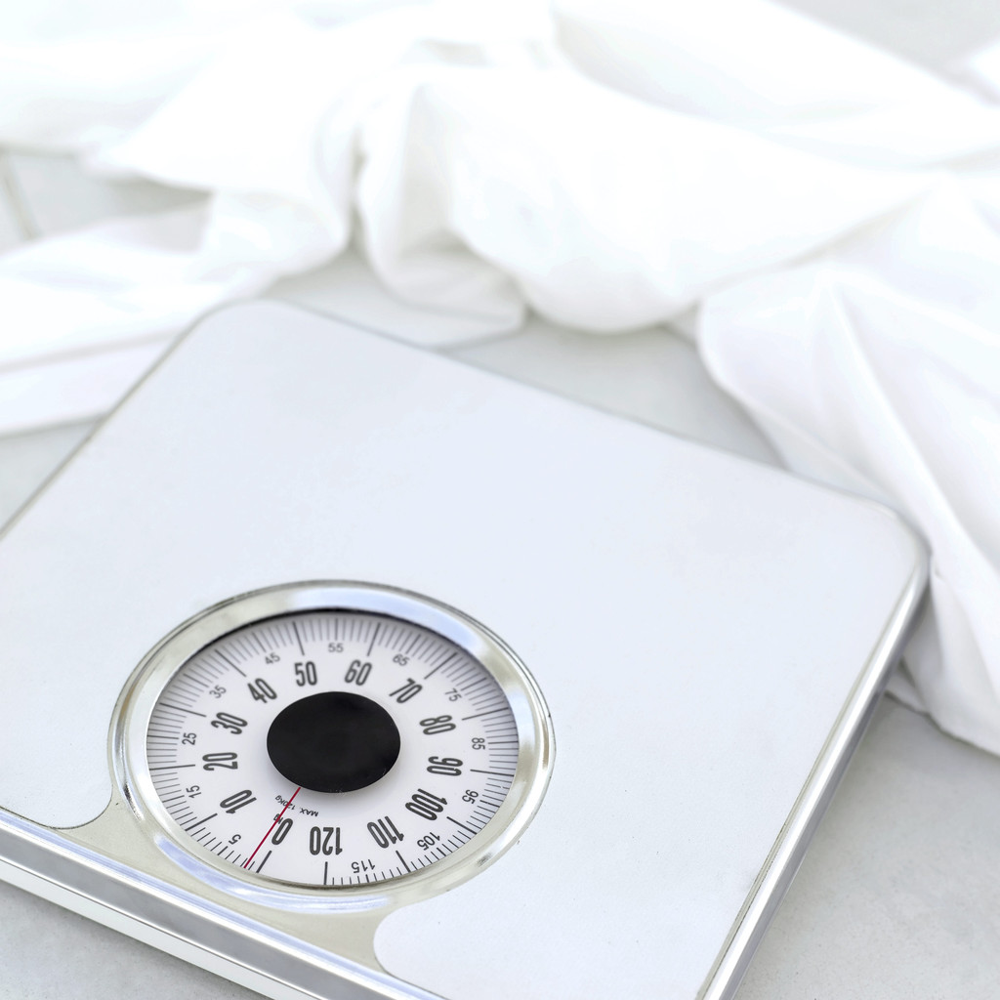

Aspiring for Weight-Loss
Aspire assist weight management device could help battle obesity.
Nicole Lee
Spring 2013

People struggling with their weight often wish there was a magical way
to simply flush the excess fat away. It’s this desire for an
easy, undemanding solution that’s sustained the commercial success of
so many diet pills that only hold placebos and empty
promises. However, with the development of Aspire
Assist therapy, it is now possible to literally drain the calories out
of your stomach.
Aspire-Assist is essentially the reverse
of a PEG (feeding tube). The aspiration tube is inserted into the
patient’s stomach through the mouth, using an endoscope. Then,
the doctor makes a small skin incision and threads the tube out of the
stomach, connecting it to a small “Skin-Port” at the surface of the
abdomen. The entire procedure takes about 20 minutes.
After a few days of healing time, patients attach a small hand-held
device to the Skin-Port about 20 minutes after a meal, and empty out a
portion of their stomach contents directly into the toilet.
Many comments about Aspire Assist device seem to state in one form or
another, that it sounds downright revolting. The thought of
squeezing the half-digested remains of your dinner out of a stomach
tube is admittedly, a bit sickening. Additionally, the aspiration
process is disturbingly similar to bulimia, and can be potentially
abused.
For people that are morbidly obese, however, there aren’t that many other appealing options available. Working off hundreds of excess pounds with traditional diet and exercise requires immense will-power that many lack. Some resort to bariatric surgeries such as gastric bypass surgery, vertical sleeve gastrectomy, or adjustable gastric banding (Lap-bands). Compared to Aspire Assist, these procedure are more invasive, and require greater lifestyle changes. Gastric bypass surgery involves stapling a portion of the stomach together, and making the food bypass a portion of the small intestine so that fewer nutrients are absorbed. In vertical sleeve gastrectomy, surgeons staple and remove most of the stomach, and in lap-band surgery, an adjustable band is used to constrict the upper stomach. According to “Review on Laparoscopic Sleeve Gastrectomy for Morbid Obesity”, average hospital stays for bariatric surgeries run from 2-4 days. In comparison, the Aspire Assist surgery is an outpatient procedure with an average hospital stay of two hours.
Common side effects of lap-bands and gastric bypass include vomiting or diarrhea, an effect that has not been observed with aspiration. Also, while bariatric surgery patients are limited to drastically tiny (~1cup) meals, people undergoing aspiration therapy can eat normal meals, and gradually work towards healthier eating habits. There is a 4% chance of serious complication in the form of Buried Bumper Syndrome with aspiration therapy. However, this risk is negligible compared to the risks of serious complication associated with bariatric surgery: There is a 14-24% risk of complications such as staple line failure, bleeding, ulcers, and death in these surgeries, making aspiration surgery the much safer alternative. The aspiration device can be used long-term, but if the patient successfully reaches their weight goal, and implements a healthier diet and exercise regimen, the aspiration tube can also be used less often, and eventually removed in a 15 minute procedure at the hospital.
According to Aspire Bariatrics, Aspire
Assist therapy has comparable weight-loss results with bariatric
surgery patients. In their US clinical trial, 24 obese patients
lost an average of 45 pounds in their first year of aspiration.
Aspiration is meant to be accompanied by medical monitoring and
lifestyle counseling to insure proper usage, and to reduce the risk of
complications such as infections. Aspire Assist has received CE
approved for the European Union, but is still running more clinical
trials, and pending FDA approval for usage in the U.S. At this
rate, it looks like Americans may have to wait a few more years before
we can start flushing our calories down the toilet.
About the Author
Nicole Lee, class of 2015, is an Integrative Biology major pursuing a career as a PA.